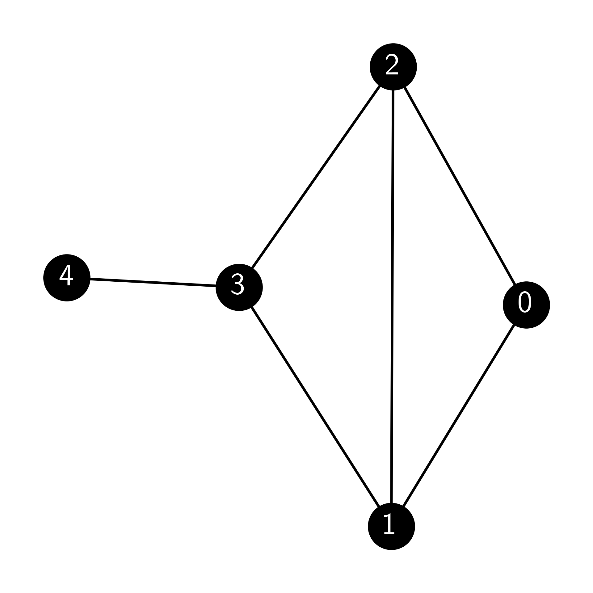
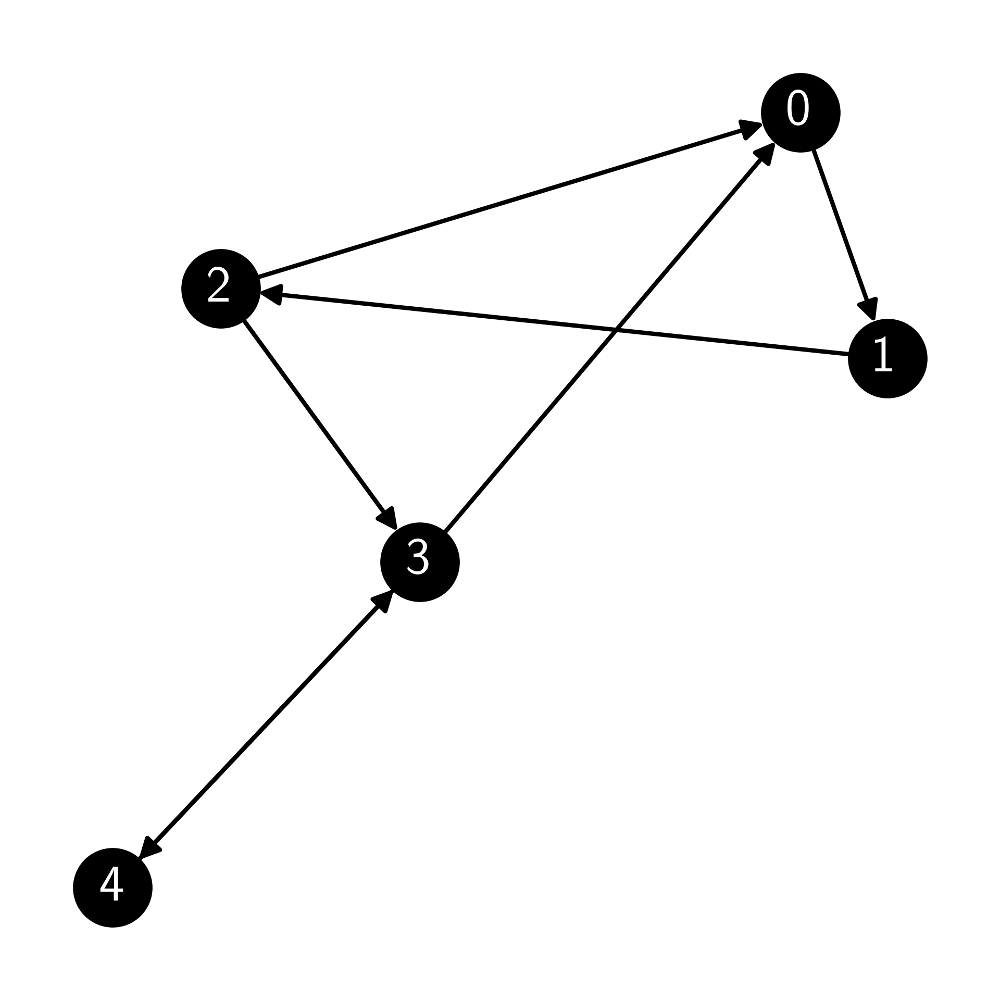

\(\newcommand{\bmu}{\boldsymbol{\mu}}\) \(\newcommand{\bSigma}{\boldsymbol{\Sigma}}\) \(\newcommand{\bfbeta}{\boldsymbol{\beta}}\) \(\newcommand{\bflambda}{\boldsymbol{\lambda}}\) \(\newcommand{\bgamma}{\boldsymbol{\gamma}}\) \(\newcommand{\bsigma}{{\boldsymbol{\sigma}}}\) \(\newcommand{\bpi}{\boldsymbol{\pi}}\) \(\newcommand{\btheta}{{\boldsymbol{\theta}}}\) \(\newcommand{\bphi}{\boldsymbol{\phi}}\) \(\newcommand{\balpha}{\boldsymbol{\alpha}}\) \(\newcommand{\blambda}{\boldsymbol{\lambda}}\) \(\renewcommand{\P}{\mathbb{P}}\) \(\newcommand{\E}{\mathbb{E}}\) \(\newcommand{\indep}{\perp\!\!\!\perp} \newcommand{\bx}{\mathbf{x}}\) \(\newcommand{\bp}{\mathbf{p}}\) \(\renewcommand{\bx}{\mathbf{x}}\) \(\newcommand{\bX}{\mathbf{X}}\) \(\newcommand{\by}{\mathbf{y}}\) \(\newcommand{\bY}{\mathbf{Y}}\) \(\newcommand{\bz}{\mathbf{z}}\) \(\newcommand{\bZ}{\mathbf{Z}}\) \(\newcommand{\bw}{\mathbf{w}}\) \(\newcommand{\bW}{\mathbf{W}}\) \(\newcommand{\bv}{\mathbf{v}}\) \(\newcommand{\bV}{\mathbf{V}}\) \(\newcommand{\bfg}{\mathbf{g}}\) \(\newcommand{\bfh}{\mathbf{h}}\) \(\newcommand{\horz}{\rule[.5ex]{2.5ex}{0.5pt}}\) \(\renewcommand{\S}{\mathcal{S}}\) \(\newcommand{\X}{\mathcal{X}}\) \(\newcommand{\var}{\mathrm{Var}}\) \(\newcommand{\pa}{\mathrm{pa}}\) \(\newcommand{\Z}{\mathcal{Z}}\) \(\newcommand{\bh}{\mathbf{h}}\) \(\newcommand{\bb}{\mathbf{b}}\) \(\newcommand{\bc}{\mathbf{c}}\) \(\newcommand{\cE}{\mathcal{E}}\) \(\newcommand{\cP}{\mathcal{P}}\) \(\newcommand{\bbeta}{\boldsymbol{\beta}}\) \(\newcommand{\bLambda}{\boldsymbol{\Lambda}}\) \(\newcommand{\cov}{\mathrm{Cov}}\) \(\newcommand{\bfk}{\mathbf{k}}\) \(\newcommand{\idx}[1]{}\) \(\newcommand{\xdi}{}\)
7.7. Exercises#
7.7.1. Warm-up worksheets#
(with help from Claude, Gemini, and ChatGPT)
Section 7.2
E7.2.1 Given a Markov chain with state space \(S = \{1, 2, 3\}\) and transition matrix
verify that \(P\) is a stochastic matrix.
E7.2.2 For the Markov chain in E7.2.1, compute \(P^2\).
E7.2.3 For the Markov chain in E7.2.1, if the initial distribution is \(\mu = (0.2, 0.3, 0.5)\), compute \(P[X_2 = 2]\).
E7.2.4 Consider a Markov chain with states \(S = \{1, 2\}\) and transition matrix
If the initial distribution is \(\mu = (0.3, 0.7)\), compute the distribution after one step.
E7.2.5 Given a Markov chain with state space \(S = \{1, 2, 3, 4\}\) and transition matrix
draw the transition graph.
E7.2.6 Given a Markov chain with state space \(S = \{1, 2, 3\}\) and transition matrix
and initial distribution \(\mu = (0.1, 0.2, 0.7)\), compute \(P[X_0 = 1, X_1 = 2, X_2 = 3]\).
E7.2.7 For the Markov chain in E7.2.6, compute \(P[X_2 = 2 | X_0 = 3]\).
E7.2.8 Given a Markov chain with state space \(S = \{1, 2, 3, 4\}\) and transition matrix
verify that \(P\) is a stochastic matrix.
E7.2.9 Consider a two-state Markov chain with state space \(S = \{0, 1\}\) and transition matrix
If the chain starts in state 0, what is the probability that it will be in state 1 after two steps?
E7.2.10 A Markov chain on states \(\{1, 2, 3\}\) has the transition matrix
Draw its transition graph.
E7.2.11 Consider a Markov chain with state space \(S = \{1, 2, 3\}\) and transition matrix
If the initial distribution is \(\mu = (1/4, 1/2, 1/4)\), find the marginal distribution of the chain at time 2.
E7.2.12 A three-state Markov chain has transition matrix
Identify any absorbing state, that is, a state from which the chain cannot leave.
E7.2.13 A two-state Markov chain has the transition matrix
If the initial distribution is \(\mu = (1/3, 2/3)\), find the distribution of the chain at time 1.
E7.2.14 A Markov chain has the transition matrix
If the chain is currently in state 2, what is the probability it will be in state 3 after two steps?
E7.2.15 Consider a Markov chain with state space \(S = \{1, 2\}\) and transition matrix
If the chain starts in state 1, what is the expected number of steps until it returns to state 1?
Section 7.3
E7.3.1 Determine if the following transition matrix is irreducible:
E7.3.2 Give an example of a \(2 \times 2\) transition matrix that is not irreducible.
E7.3.3 Given the transition matrix \(P = \begin{pmatrix} 0.4 & 0.6 \\ 0.7 & 0.3 \end{pmatrix}\), check whether the probability distribution \(\pi = (0.6, 0.4)\) is a stationary distribution of the Markov chain.
E7.3.4 Let \(P = \begin{pmatrix} 0 & 1 \\ 1/2 & 1/2 \end{pmatrix}\) be the transition matrix of a Markov chain. Verify whether \(\pi = (1/3, 2/3)\) is a stationary distribution.
E7.3.5 Find a stationary distribution for the Markov chain with transition matrix \(P = \begin{pmatrix} 0.5 & 0.5 \\ 0.5 & 0.5 \end{pmatrix}\).
E7.3.6 Determine whether the following Markov chain is irreducible:
P = np.array([[0.5, 0.5, 0], [0.4, 0.6, 0], [0, 0, 1]])
E7.3.7 Verify that the uniform distribution \(\pi = (\frac{1}{3}, \frac{1}{3}, \frac{1}{3})\) is a stationary distribution for the transition matrix \(P = \begin{pmatrix} 0.4 & 0.3 & 0.3 \\ 0.2 & 0.5 & 0.3 \\ 0.4 & 0.2 & 0.4 \end{pmatrix}\).
E7.3.8 A Markov chain has transition matrix \(P = \begin{pmatrix} 1/2 & 1/2 & 0 \\ 0 & 1/3 & 2/3 \\ 1/4 & 1/4 & 1/2 \end{pmatrix}\). Is this matrix doubly stochastic?
E7.3.9 Verify that for any stochastic matrix \(P\), the vector \((1, 1, \ldots, 1)\) is a right eigenvector of \(P\) with eigenvalue 1.
E7.3.10 Find the left eigenvector of the transition matrix \(P = \begin{pmatrix} 0.6 & 0.4 \\ 0.3 & 0.7 \end{pmatrix}\) corresponding to eigenvalue 1.
E7.3.11 For the transition matrix \(P = \begin{pmatrix} 0.7 & 0.2 & 0.1 \\ 0.4 & 0.4 & 0.2 \\ 0.6 & 0.1 & 0.3 \end{pmatrix}\), find the stationary distribution by solving the linear system \(\pi P = \pi\) together with \(\sum_{i=1}^3 \pi_i = 1\).
Section 7.4
E7.4.1 Given the transition matrix of a Markov chain:
determine if the chain is lazy.
E7.4.2 Prove that a finite-state Markov chain with a transition matrix containing only positive entries is aperiodic.
E7.4.3 Given a Markov chain with transition matrix:
and initial distribution \(\mu = (0.2, 0.8)\), compute \(\lim_{t \to \infty} \mu P^t\).
E7.4.4 For the transition matrix \(P = \begin{pmatrix} 0.4 & 0.3 & 0.3 \\ 0.2 & 0.5 & 0.3 \\ 0.4 & 0.2 & 0.4 \end{pmatrix}\) and initial distribution \(\mu = (1/3, 1/3, 1/3)\), compute \(\mu P^t\) for \(t=1000\).
Section 7.5
E7.5.1 Consider the undirected graph \(G\) with adjacency matrix
Compute the degree matrix \(D\) for the graph.
E7.5.2 Given the same graph as in E7.5.1, compute the transition matrix \(P\) for the random walk on the graph.
E7.5.3 For the same graph as in E7.5.1, verify that the transition matrix \(P\) is stochastic.
E7.5.4 Given the graph in E7.5.1, compute the stationary distribution \(\pi\) of the random walk.
E7.5.5 Given the following adjacency matrix of a directed graph:
compute the transition matrix \(P\) of the random walk on this graph.
E7.5.6 For the following undirected graph:

compute the stationary distribution \(\pi\) of the random walk on this graph.
E7.5.7 Given the following adjacency matrix of a directed graph:
compute the modified transition matrix using a damping factor of \(\alpha = 0.8\).
E7.5.8 For the graph in E7.5.7, compute the modified transition matrix focused on node 1 using a damping factor of \(\alpha = 0.8\).
E7.5.9 Given the following directed graph:

compute the modified transition matrix using a damping factor of \(\alpha = 0.9\).
E7.5.10 For the graph in E7.5.9, compute the modified transition matrix focused on node 2 using a damping factor of \(\alpha = 0.9\).
E7.5.11 Consider the directed graph \(G\) with adjacency matrix
Add self-loops to any vertex without outgoing edges and then compute the new adjacency matrix \(A'\).
E7.5.12 For the graph in E7.5.11, compute the transition matrix \(P\) for the random walk.
E7.5.13 For the graph in E7.5.11 with damping factor \(\alpha = 0.85\), compute the modified transition matrix \(Q\).
Section 7.6
E7.6.1 Given a target distribution \(\pi = (0.1, 0.2, 0.3, 0.4)\) and a proposal chain \(Q\) with transition matrix
compute the acceptance probability for a proposed move from state 2 to state 1.
E7.6.2 For the same target distribution and proposal chain as in E7.6.1, compute the acceptance probability for a proposed move from state 2 to state 3.
E7.6.3 Given a target distribution \(\pi = (0.1, 0.2, 0.3, 0.4)\) and a symmetric proposal chain \(Q\) with transition matrix
compute the acceptance probability for a proposed move from state 1 to state 2.
E7.6.4 For the same target distribution and symmetric proposal chain as in E7.6.3, compute the acceptance probability for a proposed move from state 2 to state 1.
E7.6.5 Consider a Metropolis-Hastings algorithm with target distribution \(\pi(x) = \frac{1}{Z} e^{-x^2/2}\) on the state space \(S = \mathbb{Z}\) (the integers), and proposal distribution \(Q(x, y) = \frac{1}{2}\) if \(|x-y| = 1\) and \(Q(x, y) = 0\) otherwise. If the current state is \(x = 2\), what is the probability of accepting a proposal to move to \(y = 3\)?
E7.6.6 In a Gibbs sampler with state space \(S = \mathbb{Z}^2\), suppose the current state is \((x_1, x_2) = (3, -1)\). If the first coordinate is updated according to the conditional distribution \(\pi_1(x_1 | x_2 = -1)\), and the new value is \(x_1' = 2\), what is the new state of the Gibbs sampler?
E7.6.7 Given a restricted Boltzmann machine (RBM) with visible units \(v = (v_1, v_2, v_3)\), hidden units \(h = (h_1, h_2)\), weight matrix
visible biases \(b = (1, -1, 2)\), and hidden biases \(c = (-1, 1)\), compute the conditional probability \(\pi_1^v(1|v_{-1}, h)\) for \(v = (0, 1, 0)\) and \(h = (1, 0)\).
E7.6.8 For the same RBM as in E7.6.7, compute the conditional probability \(\pi_2^h(1|v, h_{-2})\) for \(v = (0, 1, 0)\) and \(h = (1, 0)\).
E7.6.9 Consider an RBM with two visible units and two hidden units. The weight matrix is
If the offset vectors are the zero vectors, the visible units are in state \(v = (1, 0)\), and the hidden units are in state \(h = (1, 1)\), compute the energy \(E(v, h)\).
E7.6.10 Given the visible units \(\mathbf{v} = (1, 0)\) and hidden units \(\mathbf{h} = (0, 1)\) with weights \(W = \begin{pmatrix}0.4 & -0.2 \\ 0.3 & 0.5\end{pmatrix}\) and biases \(\mathbf{b} = (0.1, -0.3)\) and \(\mathbf{c} = (0.2, -0.1)\), compute the energy \(E(\mathbf{v}, \mathbf{h})\) in an RBM.
E7.6.11 Given a binary vector \(\mathbf{v} = (1, 0, 1)\) and weight matrix \(W = \begin{pmatrix}0.5 & -0.2 \\ 0.3 & 0.8 \\ -0.6 & 0.1\end{pmatrix}\), and bias vector \(\mathbf{c} = (0.1, -0.3)\), compute the conditional mean \(\mathbb{E}[\mathbf{h} | \mathbf{v}]\) for the hidden units in an RBM.
E7.6.12 For a vector \(\mathbf{v} = (1, 0, 1)\), a weight matrix \(W = \begin{pmatrix}0.5 & -0.2 \\ 0.3 & 0.8 \\ -0.6 & 0.1\end{pmatrix}\), and a bias vector \(\mathbf{b} = (0.2, -0.1, 0.3)\), compute the conditional mean \(\mathbb{E}[v_i | \mathbf{h}]\) for the visible units in an RBM, assuming \(\mathbf{h} = (0, 1)\).
7.7.2. Problems#
7.1 Let \(A_1, \ldots, A_m\) be disjoint events and let \(B\) be such that \(\P[B] > 0\). Show that
\(\lhd\)
7.2 (Adapted from [Nor]) Suppose \((X_n)_{n \geq 0}\) is a Markov chain. Show that, for any positive integer \(k \geq 2\), the stochastic process \((Y_n)_{n \geq 0}\) with \(Y_n = X_{nk}\) is also a Markov chain and derive its transition matrix in terms of the transition matrix \(P\) of \((X_n)_{n \geq 0}\). \(\lhd\)
7.3 Let \(G = (V,E)\) be the Petersen graph. Consider the following random walk on \(G\). We start at \(X_0 = v_0\). Then, for each \(t\geq 0\), we let \(X_{t+1}\) be a uniformly chosen neighbor of \(X_t\), independently of the previous history. Formally, fix \(X_0 = v_0\) and let \((Z_t)_{t \geq 0}\) be an i.i.d. sequence of random variables taking values in \(\{1,2,3\}\) satisfying
Then define, for all \(t \geq 0\),
if \(X_t = v_i\).
a) Under what conditions on \(x_0,\ldots,x_t\) does
b) Prove that \((X_t)_{t \geq 0}\) is a Markov chain by following the argument used for the Weather Model. \(\lhd\)
7.4 Let \((X_t)\) be as in Problem 7.3. Compute
Justify your answer carefully. \(\lhd\)
7.5 Consider a random walk on the following graph, where at each step with choose a uniformly random neighbor. Write down the transition matrix of the chain.

\(\lhd\)
7.6 Let \(a, b \in \mathbb{R}\) with \(a < 0\) and \(b > 0\). Show that
[Hint: Consider the cases \(a + b \geq 0\) and \(a + b < 0\).] \(\lhd\)
7.7 Let \(P = (p_{i,j})_{i,j=1}^n\) be a transition matrix reversible with respect to a probability distribution \(\bpi = (\pi_i)_{i=1}^n\). Assume that the initial distribution is \(\bpi\). Show that for any sample path \(z_0,\ldots,z_T\), the reversed path has the same probability, that is,
\(\lhd\)
7.8 Let \(\mathbf{x} = (x_1,\ldots,x_n)\) be a row vector with \(n\) components. Its \(\ell_1\)-norm is defined as
Let \(P\) be a stochastic matrix. Show that, if \(\mathbf{x} \geq 0\) (i.e., all entries of \(\mathbf{x}\) are nonnegative), then for any positive integer \(k\),
\(\lhd\)
7.9 Let \(A_1,\ldots,A_r\) be any collection of events.
a) Prove the product rule
provided all conditional probabilities above are well-defined. [Hint: Apply the definition of conditional probability and simplify. You may want to try \(r=2,3\) first.]
b) Prove that the product rule also holds for conditional probabilities, i.e., let \(D\) be an additional event and show that
provided all conditional probabilities above are well-defined. \(\lhd\)
7.10 Let \(A_1,\ldots,A_r\) be a partition of \(\Omega\) and let \(B\) be an event. Prove the law of total probability
provided all conditional probabilities above are well-defined. [Hint: Use the definition of conditional probabilities and the probability of a disjoint union.] \(\lhd\)
7.11 Let \(A\) and \(B\) be events with positive probability. Prove Bayes’ Rule
[Hint: Use the definition of conditional probabilities.] \(\lhd\)
7.12 Let \((X_t)_{t \geq 0}\) be a Markov chain on the state space \(\mathcal{S}\). For any \(x_{t-1}, x_t \in \mathcal{S}\) and subset \(\mathcal{P} \subseteq \mathcal{S}^{t-1}\) of state sequences of length \(t-1\), show that
[Hint: Use the definition of the conditional probability, sum over all paths in \(\mathcal{P}\), then use the Markov property and simplify.] \(\lhd\)
7.13 Let \((X_t)_{t \geq 0}\) be a Markov chain on the state space \(\mathcal{S}\). For any nonnegative integer \(s < t\), \(x_t \in \mathcal{S}\) and \((x_0,\ldots,x_s) \in \mathcal{S}^{s+1}\), show that
[Hint: Sum over all possible trajectories from time \(s+1\) to time \(t-1\), then use the multiplication rule and the Markov property. Recall that we have a formula for the right-hand side.] \(\lhd\)
7.14 Let \((X_t)_{t \geq 0}\) be a Markov chain on the state space \(\mathcal{S}\). For any nonnegative integer \(s < t\), \(x_{s}, x_t \in \mathcal{S}\) and subset \(\mathcal{P} \subseteq \mathcal{S}^{s}\) of state sequences of length \(s\), show that
[Hint: Argue as in Problem 7.13 and use Problem 7.12.] \(\lhd\)
7.15 Let \((X_t)_{t \geq 0}\) be a Markov chain on the state space \(\mathcal{S}\). For any integer \(h \geq 0\), \(x_{t-1} \in \mathcal{S}\) and subsets \(\mathcal{P} \subseteq \mathcal{S}^{t-1}\), \(\mathcal{F} \subseteq \mathcal{S}^{h+1}\) of state sequences of length \(t-1\) and \(h+1\) respectively, show that
A different way of saying this is: \((X_0,\ldots,X_{t-2})\) (i.e. the past) and \((X_t,\ldots,X_{t+h})\) (i.e., the future) are independent given \(X_{t-1}\) (i.e., the present). [Hint: Sum over all paths in \(\mathcal{F}\) and argue as in Problem 7.14.] \(\lhd\)
7.16 Let \(A,B,C\) be three events. Assume that \(C\) is independent of both \(A\), \(B\) and \(A \cap B\). Show that
\(\lhd\)
7.17 Let \((X_t)_{t \geq 0}\) be a Markov chain on the state space \(\mathcal{S}\). Prove that for any \(s < T\) and any \(x_s,\ldots,x_T \in \mathcal{S}\),
\(\lhd\)
7.18 Let \(P, Q \in \mathbb{R}^{n \times n}\) be stochastic matrices. Show that \(PQ\) is stochastic. \(\lhd\)
7.19 Let \((X_t)_{t \geq 0}\) be a Markov chain on the state space \(\mathcal{S}\). Prove that for any \(s < t\) and any \(x_s,x_t \in \mathcal{S}\),
\(\lhd\)
7.20 Let \((X_t)_{t \geq 0}\) be a Markov chain over \([n]\) with transition matrix \(P = (p_{i,j})_{i,j=1}^n\). Let \(\bpi^{(0)}\) and \(\bpi^{(1)}\) be distinct stationary distributions of \(P\) (as row vectors). Show that, for any \(\alpha \in (0,1)\),
is yet another stationary distribution. \(\lhd\)
7.21 Let \(P = (p_{i,j})_{i,j=1}^n\) be a transition matrix over \([n]\). Recall that a stationary distribution satisfies
Show that the equation for \(j = n\) is a linear combination of the equations for \(j=1,\ldots,n-1\). [Hint: Sum over \(j\) above.] \(\lhd\)
7.22 Let \(P = (p_{i,j})_{i,j=1}^n\) be a transition matrix over \([n]\). Recall that a stationary distribution satisfies
In Problem 7.21, it was shown that the equation for \(j = n\) is a linear combination of the equations for \(j=1,\ldots,n-1\). But a stationary distribution must also satisfy \(\sum_{i=1}^n \pi_i = 1\). Show that replacing the equation for \(j = n\) with this latter equation leads to the system
\(\lhd\)
7.23 Let \(P \in \mathbb{R}^{n \times n}\) be a weakly lazy, irreducible transition matrix. Show that \(P^2\) is irreducible. \(\lhd\)
7.24 Prove the Law of Total Expectation for discrete random variables. \(\lhd\)
7.25 Let \(P^{(1)}, P^{(2)},\ldots, P^{(r)} \in \mathbb{R}^{n \times n}\) be stochastic matrices. Show that for any \(\alpha_1,\ldots,\alpha_r \in [0,1]\) with \(\sum_{i=1}^r \alpha_i = 1\),
is stochastic. That is, a convex combination of stochastic matrices is a stochastic matrix. \(\lhd\)
7.26 Consider the following graph \(G\).

Let \((X_t)_{t \geq 0}\) be random walk on the graph \(G\), that is, at each step on pick a uniform neighbor of the current vertex.
a) Compute the transition matrix \(P\) of \((X_t)_{t \geq 0}\).
b) Suppose we start at state \(3\) at time \(0\), i.e., \(X_0 = 3\). Compute the distribution of \(X_2\).
\(\lhd\)
7.27 Let \(Q \in \mathbb{R}^{n \times n}\) be a matrix with nonnegative entries (whose rows do not necessarily sum to \(1\)).
a) Show that any eigenvalue \(\lambda\) of \(Q\) satisfies
[Hint: Mimic the proof of the stochastic case.]
b) Use the argument in (a) to show that a corresponding left eigenvector \(\mathbf{z} = (z_1,\ldots,z_n)\) (as row vector) satisfies
\(\lhd\)
7.28 Let \(P \in \mathbb{R}^{n \times n}\) be a stochastic matrix and consider the block form
where \(Q \in \mathbb{R}^{(n-1)\times (n-1)}\), \(\mathbf{a},\mathbf{b} \in \mathbb{R}^{n-1}\), and \(c \in \mathbb{R}\).
a) Show that, if \(P\) is irreducible, then \(\mathbf{a} \neq 0\).
b) Show that, if \(P\) is irreducible, then \(\mathbf{b} \neq 0\).
\(\lhd\)
7.29 Let \(P \in \mathbb{R}^{n \times n}\) be a stochastic matrix and consider the block form
where \(Q \in \mathbb{R}^{(n-1)\times (n-1)}\), \(\mathbf{a},\mathbf{b} \in \mathbb{R}^{n-1}\), and \(c \in \mathbb{R}\).
a) Show that \(Q - I_{(n-1)\times (n-1)}\) is nonsingular. [Hint: Argue by contradiction that, if there is a nonzero vector \(\mathbf{x}\) such that \(\mathbf{x} (Q-I_{(n-1)\times (n-1)}) = \mathbf{0}\), then \(\mathbf{y} (P-I_{n\times n}) = \mathbf{0}\) for \(\mathbf{y} = (\mathbf{x}, 0)\). Use Problems 7.27 and 7.28.]
b) Use (a) to find the unique stationary distribution of \(P\) from the solution of \(\mathbf{x} (Q-I) = - \mathbf{b}^T\). This is known as the “Remove an Equation” approach.
\(\lhd\)
7.30 Recall that, for a vector \(\mathbf{x} = (x_1,\ldots,x_n)^T\), we let \(\|\mathbf{x}\|_\infty = \max_{i \in [n]} |x_i|\). Show that, if \(Q\) is a stochastic matrix, then
\(\lhd\)
7.31 Let \(P = (p_{i,j})_{i,j=1}^n \in \mathbb{R}^n\) be a transition matrix.
a) Let \(\alpha_1, \ldots, \alpha_m > 0\) such that \(\sum_{i=1}^m \alpha_i = 1\). Let \(\mathbf{x} = (x_1,\ldots,x_m) \in \mathbb{R}^n\). Show that
and that equality holds if and only if \(x_1 = x_2 = \cdots = x_m\).
b) Let \(\mathbf{0} \neq \mathbf{y} \in \mathbb{R}^n\) be a right eigenvector of \(P\) with eigenvalue \(1\), that is, \(P \mathbf{y} = \mathbf{y}\). Assume that \(\mathbf{y}\) is not a constant vector, that is, there is \(i \neq j\) such that \(y_i \neq y_j\). Let \(k \in [n]\) be such that \(y_k = \max_{i \in [n]} y_i\). Show that for any \(\ell \in [n]\) such that \(p_{k,\ell} > 0\) we necessarily have
[Hint: Use that \(y_k = \sum_{i=1}^n p_{k,i} y_i\) and apply (a).]
c) Assume that \(P\) is irreducible. Let \(\mathbf{0} \neq \mathbf{y} \in \mathbb{R}^n\) again be a right eigenvector of \(P\) with eigenvalue \(1\). Use (b) to show that \(\mathbf{y}\) is necessarily a constant vector.
d) Use © to conclude that \(\mathrm{dim}(\mathrm{null}(P^T - I)) = 1\). \(\lhd\)
7.32 Prove the Correctness of Metropolis-Hastings for general (i.e., possibly asymmetric) \(Q\). \(\lhd\)
7.33 On the space of \(28 \times 28\) black-and-white images, consider the following Markov chain: at each step, we pick a pixel uniformly at random and flip its value with probability \(1/2\).
a) Is the chain irreducible? Explain.
b) What is the stationary distribution? \(\lhd\)
7.34 Construct two distinct transition matrices on 3 states whose stationary distribution is uniform. \(\lhd\)
7.35 Consider the “independent sampler” over the finite state space \(\mathcal{S}\): at each step, ignore the current state and choose the next state according to the target distribution \(\bpi\). Show that this Markov chain has stationary distribution \(\bpi\). \(\lhd\)
7.36 In the example on Metropolis-Hastings for the Poisson distribution truncated to support \([n]\), derive the acceptance probabilities for the states \(i = 1\) and \(i = n\). \(\lhd\)
7.37 For the general Gibbs sampler, write down explicitly the staying probability \(Q(\bx, \bx)\) and check it is indeed in \([0,1]\). \(\lhd\)
7.38 Suppose \(\pi\) is a strictly positive probability distribution over \(\mathcal{Z}^d\), where \(\mathcal{Z}\) is finite.
a) For \(i \in [d]\) and \(\bx \in \mathcal{Z}^d\), give an explicit expression for \(\pi_i(x_i|\bx_{-i})\) by applying the definition of the conditional probability.
b) Show that, for all \(i \in [d]\) and all \(\bx \in \mathcal{Z}^d\), \(\pi_i(x_i|\bx_{-i}) > 0\). \(\lhd\)
7.39 Show that the Gibbs sampler is irreducible when \(\pi\) is strictly positive. \(\lhd\)